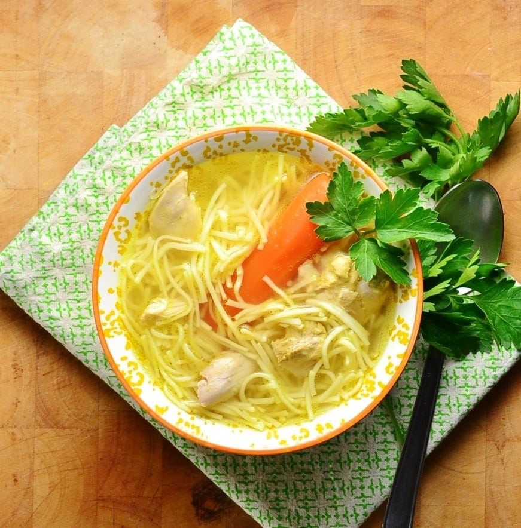

Back
A staple in every Polish Kitchen

Description:
This mexican dish has been an immensely popular choice in the United States for a long time. It's also quite diverse with the meat an toppings options, but for this recipe we will focus on a ground beef quesadilla and a very basic recipe.
The Quesadilla Ingredients
Quesadilla
1 large tortilla
1/2 a white or yellow onion
2 jalapeno peppers
4 cloves of garlic
500 grams of ground beef
200 grams grated monterey jack cheese
100 grams grated sharp cheddar cheese
1 tbsp unsalted butter
Sauce
30 grams finely chopped cilantro
60 grams sour cream
60 grams salsa verde
Steps
- Heat a medium non-stick sauce pan on medium heat.
- Add your 500g of ground beef and cook for 5-10 minutes or until browned.
- Add salt and pepper to taste.
- Add one chopped onion, then add two sliced jalapenos and finely sliced garlic.
- Turn heat up to medium high and cook until everything has softened.
- Remove the meat filling mixture out of the pan into a medium sized bowl.
- At this point, mix your ingredients for the sauce in a cup or small bowl to use later.
- Mix your grated cheese into a small bowl together as well.
- With a clean pan, heat to medium heat and add 1 tbsp butter.
- When melted, add your tortilla, then add a desired amount of your sauce to one half of the tortilla.
- Add half your cheese mixture on top of your sauce.
- Add 50 grams of your meat mixture on the cheese, then cover with the other half of the cheese mix.
- Fold your tortilla over and cook on that side an additional 2 minutes.
- Reduce heat to medium low.
- Flip your tortilla and cook an additional 5 minutes.
- After all the cheese has melted and the tortilla has turned a golden brown color on both sides, remove from heat and serve with the sauce on the side.
- And most importantly, enjoy!